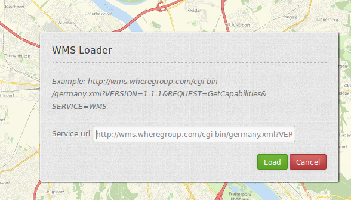

WMS Loader¶
Opens a dialog in which a WMS can be loaded via the getCapabilities-Request. You can load WMS 1.1.1 and WMS 1.3.0.
{kind=link}
Configuration¶

- Auto open: true/false open when application is started, default false.
- Split layers: split layer on load of the service, default false.
- Use declarative: allow to load service from a link (for example from featureInfo or search) and define the layers to activated, default false.
- Title: Title of the element. The title will be listed in “Layouts” and allows to distinguish between different buttons. It will be indicated if “Show label” is activated.
- Tooltip: text to use as tooltip.
- Target: Id of Map element to query.
- Defaultformat: default format is image/png, further possibilities: image/gif, image/jpeg.
- Default infoformat: default infoformat is text/html, further possibilities: text/xml, text/plain.
YAML-Definition:¶
target: ~ # Id of Map element to query
tooltip: 'WMS Loader' # text to use as tooltip
autoOpen: false # true/false open when application is started, default false
defaultFormat: 'image/png' # default format is image/png, further possibilities: image/gif, image/jpeg
defaultInfoFormat: 'text/html' # default infoformat is text/html, further possibilities: text/xml, text/plain
splitLayers: false # split layer on load of the service, default false
useDeclarative: false # allow to load service from a link (for example from featureInfo or search)
# and define the layers to activated, default false
You need a button to show this element. See Button for inherited configuration options.
How to add a WMS by defining a link¶
You can add a WMS to Mapbender by defining a link f.e. in your WMS featureinfo or your search results.
Set useDeclarative true im mapbender.yml or check declarative in administration.
The link has to look like this:
<a mb-action="source.add.wms" mb-layer-merge="1" mb-wms-merge="1"
mb-wms-layers="Gewaesser,Fluesse"
href="http://wms.wheregroup.com/cgi-bin/germany.xml?VERSION=1.1.1&REQUEST=GetCapabilities&SERVICE=WMS">load service</a>
<a mb-action="source.add.wms" mb-layer-merge="1" mb-wms-merge="1"
mb-wms-layers="Gewaesser,Fluesse"
mb-url="http://wms.wheregroup.com/cgi-bin/germany.xml?VERSION=1.1.1&REQUEST=GetCapabilities&SERVICE=WMS" href="">load service</a>
mb-action="source.add.wms" # defines action to add a WMS
mb-wms-merge="1" # adds the WMS only once, if WMS is already part of the application it will use the WMS which is there (default is 1)
mb-layer-merge="1" # default is 1 which means: activate the layers passed mb-wms-layers and do not disable the layers which are already active.
mb-wms-layers="Gewaesser,Fluesse" # defines the layers to be activated, _all activates all layers, default all layers are deactivated
href oder mb-url # refer to the WMS getcapabilities URL
Class, Widget & Style¶
- Class: Mapbender\WmsBundle\Element\WmsLoader
- Widget:
- Style:
HTTP Callbacks¶
None.
JavaScript API¶
activate¶
Opens a dialog in wich a WMS can be loaded via the getCapabilities-Request. You can load WMS 1.1.1 and WMS 1.3.0.
JavaScript Signals¶
None.